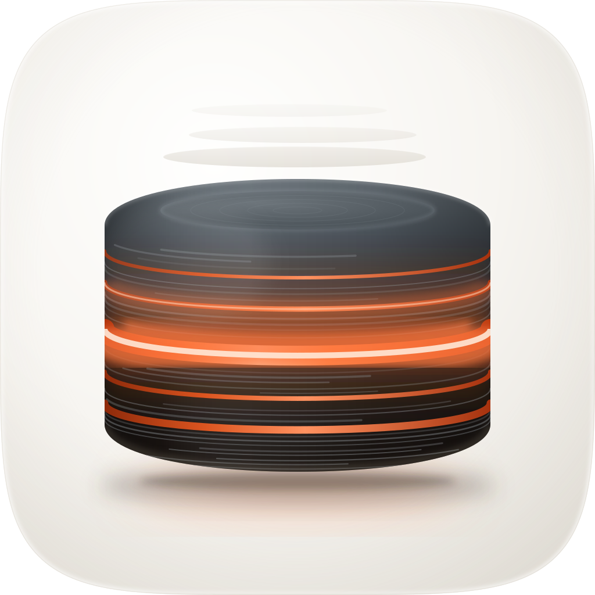
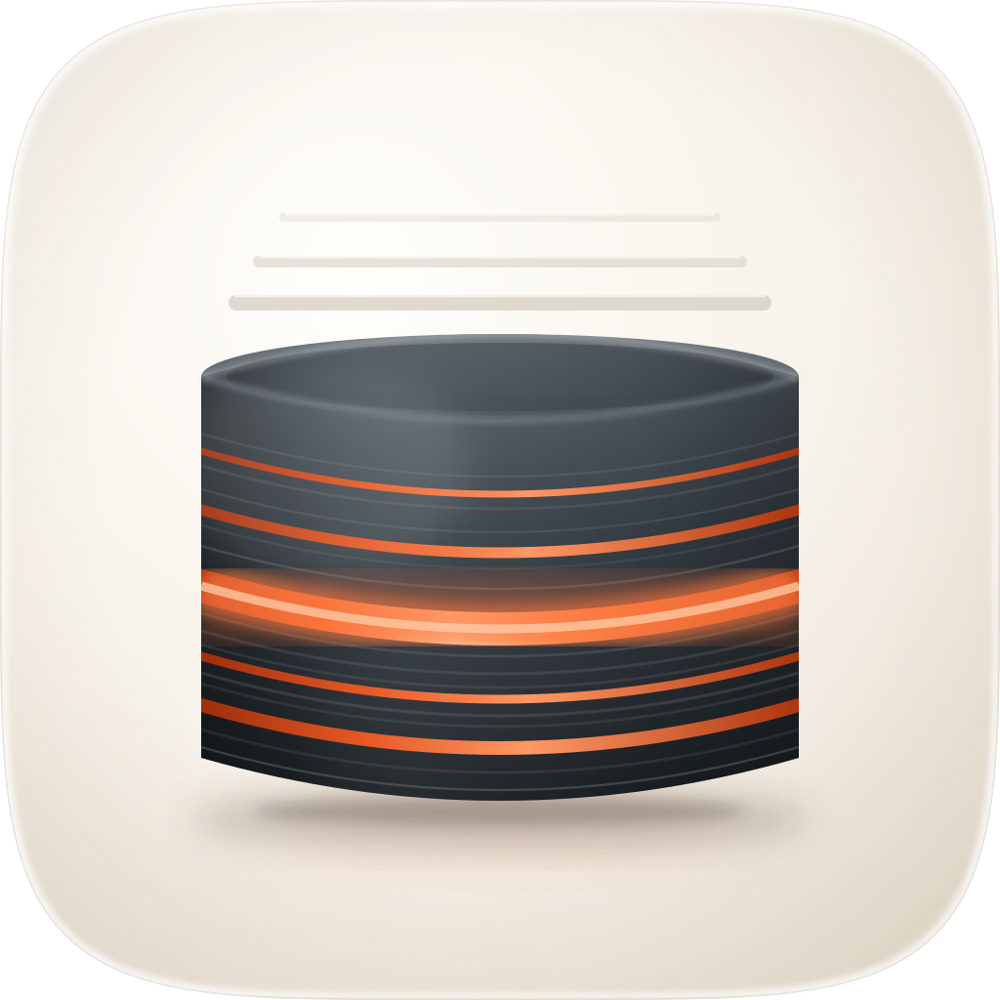
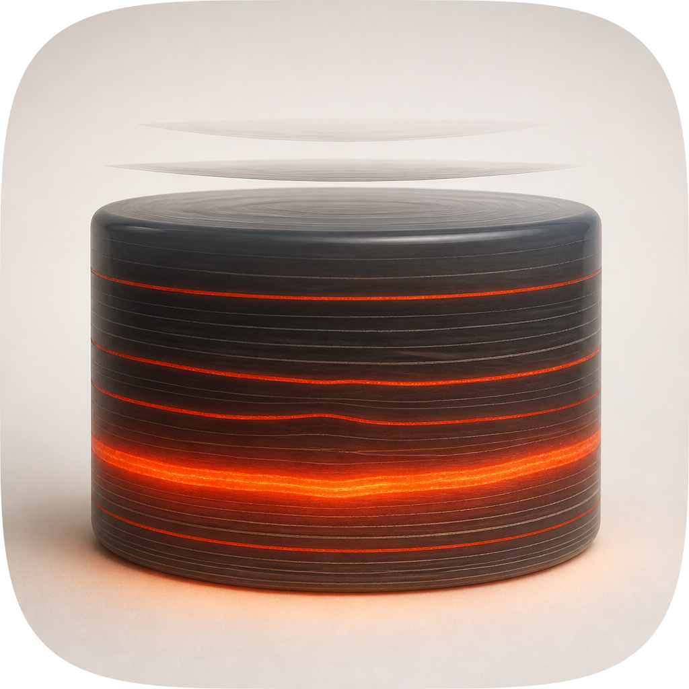
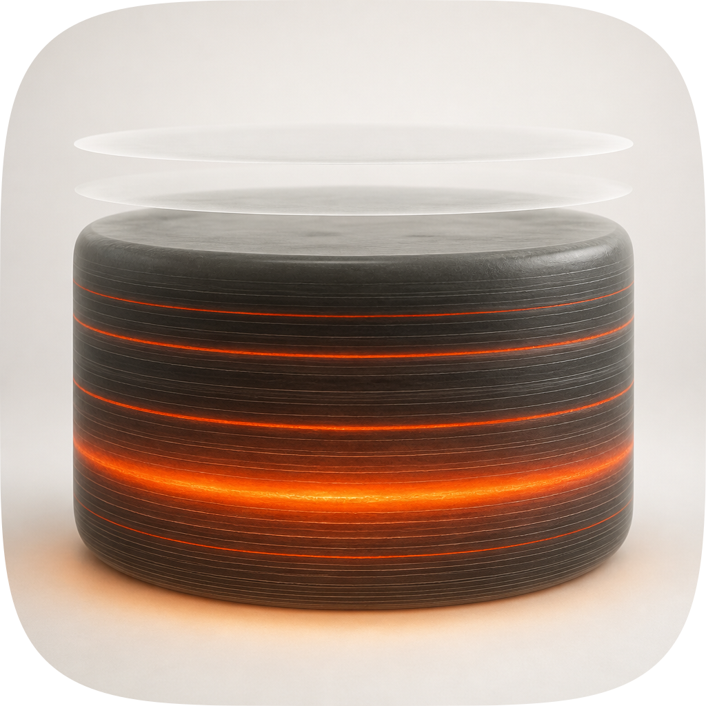
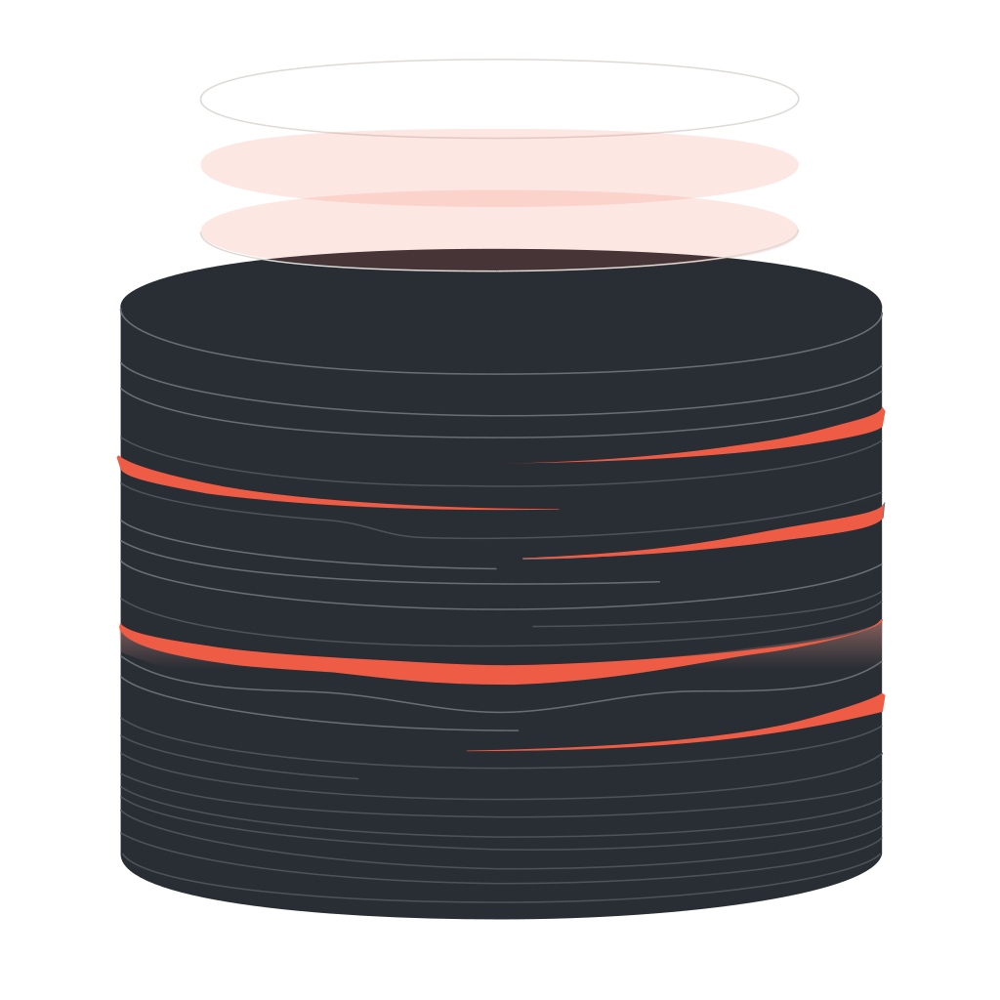
| Take | Renders at 128 / 64 / 48 / 32 / 16 css px (2× retina sources), plus the 16px squint magnified | Rubric | Verdict |
|---|---|---|---|
| A-v5 · icon.svghand-authored layered SVG, rebuilt twice against C1. SHIPS |
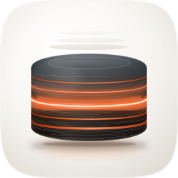 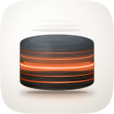 |
11 / 12 | A squat poured-gel core of compressed strata on a porcelain cushion: rounded shoulders top and bottom, ~55 hairline layers tightening with depth and pinching out part-width, five vermilion seams with one dominant blooming through the gel wall, and a warm spill onto the floor beneath it. Rebuilt a second time after a side-by-side call went to C1 on presence and material: the glyph grew from 58.6% to 64.8% of the tile, the lathe texture roughly doubled in density, the wall now falls from cool slate to a warm near-black base, and the emissive interior gained a bright core plus a second glowing seam. Checks 1–4 pass on real renders: 664px glyph = 64.8% of tile at the top of the sanctioned 55-65% band, 180px side margins, solid mass centred at y=496 with the contact shadow carrying the balance below it. Layers #bg/#mid/#fg/#highlight intact, so #10 passes by construction. Sole deduction at #4: the 16px read resolves to a dark mass with one warm band, so identity survives and the "five" does not. |
| A-v1 · icon-v1.svgfirst hand-authored master |
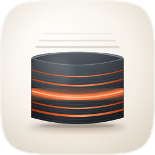 |
8 / 12 | Same idea, wrong construction, and the render said so where the source did not. Hard-fails #3: a concentric inner ellipse on the top face turned the silhouette into an open pot, so the object reads as a vessel holding something rather than a solid core. Also fails #8, because the body used quadratic Béziers whose end tangents are not vertical, so the base met the side walls at a visible corner and the object looked sliced off rather than resting. Five near-equal stripes gave no hierarchy, and at 16px it reads as a striped tin. Fixed in v4 by cubic halves with tangent-vertical ends and a single dominant seam. |
| C1 · icon-c1.pngGPT Image 2 raster, corpus-referenced, material winner |
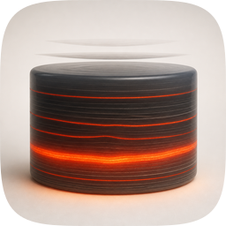 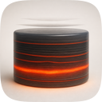 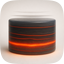 |
9 / 12 | Best raw material of the set and the take that diagnosed v1: rounded shoulders on a solid poured form, dozens of legible turned strata, and the graphite visibly warming for ~150px either side of the glowing seam. That warming is the era's authored-overlap tell and it went straight into the master. Fails #10 by construction (a flat raster has no layers, so Dark/Clear/Tinted degrade) and fails #2: the object runs ~76% of the tile, so at 16px the side margins are gone and it crowds the mask. Rebuilt into A-v5 rather than shipped, per the pipeline rule, and it set the bar twice: the first pass took its form and glow-through, and a later side-by-side call that C1 still looked better drove the size, texture-density and emissive rebuild that produced v5. |
| C2 · icon-c2.pngGPT Image 2 raster, rounder pebble form |
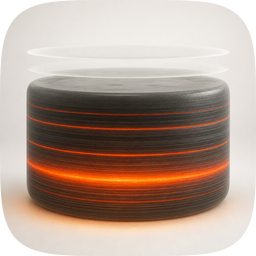 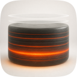 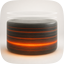 |
8 / 12 | Handsome, and the softest material of the three rasters, but the extra corner rounding costs it the subject: the form reads as a river stone or an ottoman rather than something compressed, which is the one thing the glyph has to say (#11). Its shed sheets float as solid opaque discs well clear of the body, so they read as stacked plates rather than material being discarded. Same #10 raster liability, and it is wider than C1 so #2 is worse. Kept as an alternate. |
| B · icon-engineB-arrow.svgArrow 1.1 vector take |
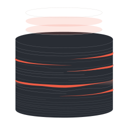 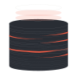 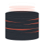 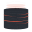 |
5 / 12 | The miss of the set. Ships field-less: no tile at all, so it floats on whatever is behind it and there is no mask discipline to audit (#1 fail). The body came back taller than it is wide, which throws away the compression the whole glyph exists to state (#3 fail), and at ~77% of the tile it crowds the safe zone (#2 fail). No light model and no contact shadow (#8 fail); the seams are broken strokes that stop mid-wall and only four of the five landed. One thing salvaged and it was worth having: the discontinuous, part-width hairlines, which read like sedimentary bands pinching out. That behaviour is in the master. Kept for the record, because a variation set that hides its losers is not an audit. |
python3 audit_sheet.py render <dir> (1024 / 256 / 128 / 96 / 64 / 32 sources); verified by its check subcommand.compaction-quality → braindump on 10 Aug 2026, which rewrote icon.svg's unrendered <title> and nothing else — so the master's mtime moved past this sheet's without the artwork changing, and the verdicts still describe what is on disk (icon-notes.md records that call). The sheet's own heading still carried the old name until 19 Aug 2026; it now reads braindump, and icon-v1.svg's <title> deliberately keeps the old one, being a take that lost under it. Re-rendered on 19 Aug 2026 to add the 128px and 96px sources (and so the 64 and 48 css-px display rows), the missing A-v1 hero, and the 1024px hero row the earlier sheet rendered but never showed. Nothing was re-judged.